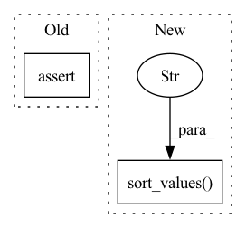

Pattern ID :30671
Before Change
def test_finishes(df):
stack = Stack([KNN()], n_folds=2, budget=1)
stack.fit_predict(df, 1)
assert True
After Change
def test_finishes(df):
stack = Stack([KNN()], n_folds=2, budget=1, seed=1)
pred = stack.fit_predict(df, 1).toPandas()
pred = pred.loc[:, ["user_id", "item_id"]].sort_values("user_id" ) .reset_index(drop=True)
res = pd.DataFrame({"user_id": [1, 2, 3, 4], "item_id": [7, 5, 4, 7]})
pd.testing.assert_frame_equal(pred, res)
In pattern: SUPERPATTERN
Frequency: 3
Non-data size: 2
Instances Fragment ID: 90493757
Project Name: sb-ai-lab/replay
Commit Name: af83229f4f08642d7822f0d7395dd27ccba9aaf2
Time: 2020-10-13
Author: yytamm@sberbank.ru
File Name: tests/models/test_stack.py
M Class Name: AnonimousClass
N Class Name: AnonimousClass
M Method Name: test_finishes(1)
N Method Name: test_finishes(1)
M Parent Class:
N Parent Class:
M File Name: tests/models/test_stack.py
N File Name: tests/models/test_stack.py
M Start Line: 24
M End Line: 25
N Start Line: 24
N End Line: 27
Before Change
def test_finishes(df):
stack = Stack([KNN()], n_folds=2, budget=1)
stack.fit_predict(df, 1)
assert True
After Change
def test_finishes(df):
stack = Stack([KNN()], n_folds=2, budget=1, seed=1)
pred = stack.fit_predict(df, 1).toPandas()
pred = pred.loc[:, ["user_id", "item_id"]].sort_values("user_id" ) .reset_index(drop=True)
res = pd.DataFrame({"user_id": [1, 2, 3, 4], "item_id": [7, 5, 4, 7]})
pd.testing.assert_frame_equal(pred, res)
Fragment ID: 90493758
Project Name: sb-ai-lab/replay
Commit Name: 9405dd1ebbc8691fd238984b6d1862fcc0f86c3e
Time: 2020-09-15
Author: yytamm@sberbank.ru
File Name: tests/models/test_stack.py
M Class Name: AnonimousClass
N Class Name: AnonimousClass
M Method Name: test_finishes(1)
N Method Name: test_finishes(1)
M Parent Class:
N Parent Class:
M File Name: tests/models/test_stack.py
N File Name: tests/models/test_stack.py
M Start Line: 24
M End Line: 25
N Start Line: 24
N End Line: 27
Before Change
(_df["Region"] == region)]
if len(result) == 0:
return None
assert len(set(result["InstanceType"])) == 1, (result, acc_name, acc_count,
region)
return result.iloc[0]["InstanceType"]
After Change
// 1x T4, which we pick the cheapest. For other cases, throw
// exceptions to manually investigate.
assert t.startswith("g4dn"), result
result.sort_values("Price" , ascending=True, inplace=True)
return result.iloc[0]["InstanceType"]
def list_accelerators(gpus_only: bool) -> Dict[str, List[int]]: Fragment ID: 90493759
Project Name: skypilot-org/skypilot
Commit Name: 007be38f3df3e5877ad537820c83fb693dd2246e
Time: 2021-11-29
Author: lsf@berkeley.edu
File Name: prototype/sky/clouds/service_catalog/aws_catalog.py
M Class Name: AnonimousClass
N Class Name: AnonimousClass
M Method Name: get_instance_type_for_accelerator(3)
N Method Name: get_instance_type_for_accelerator(3)
M Parent Class:
N Parent Class:
M File Name: prototype/sky/clouds/service_catalog/aws_catalog.py
N File Name: prototype/sky/clouds/service_catalog/aws_catalog.py
M Start Line: 63
M End Line: 64
N Start Line: 56
N End Line: 68